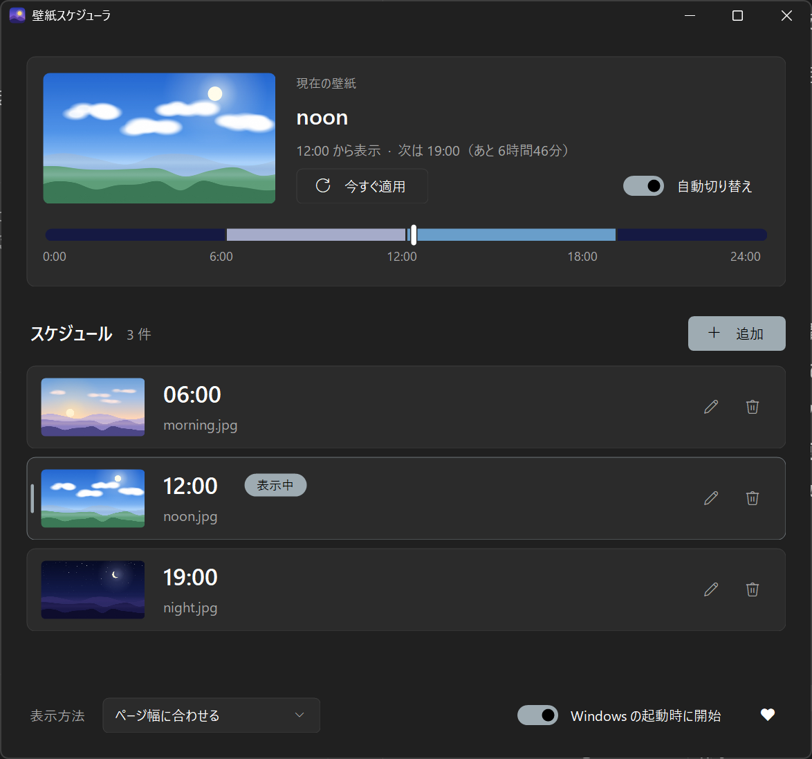
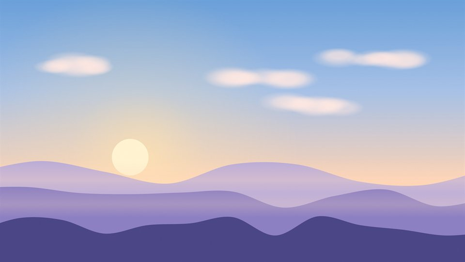
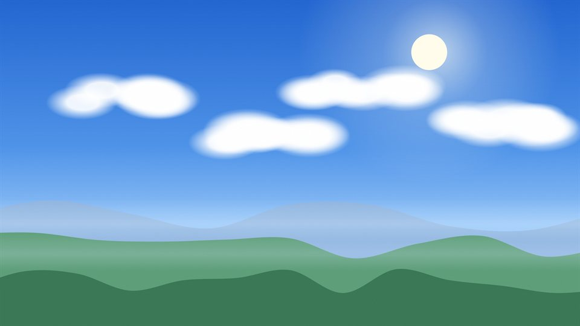
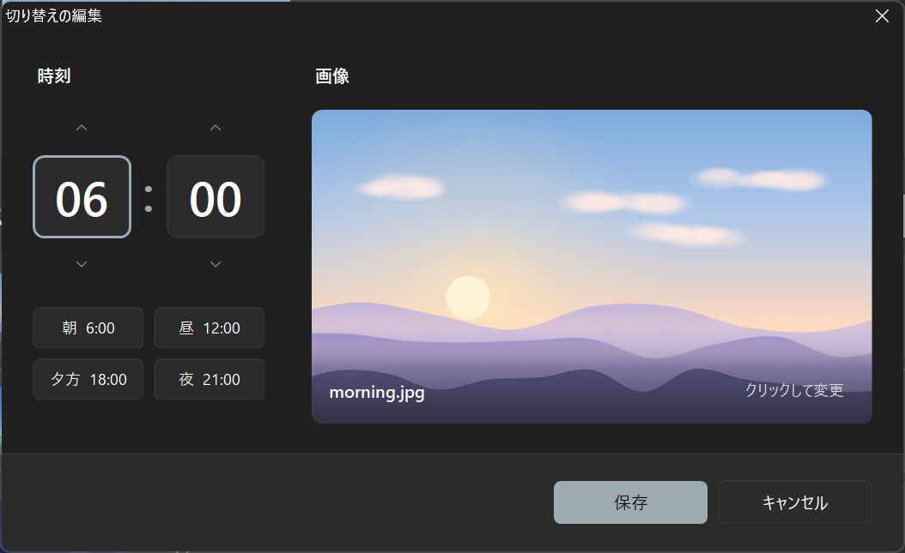

一日の流れに合わせて、壁紙が変わる
時刻と画像を登録しておくだけ。毎日その時刻になると、壁紙が自動で切り替わります。


特長
Windows 標準のスライドショーではできない「何時にこの画像」を、かんたんに。
時刻を指定して切り替え
「6:00 は朝の景色」のように、時刻と画像を登録するだけ。毎日くり返し切り替わります。
24 時間タイムライン
どの時間帯にどの壁紙になるかを、各画像の色でひと目で確認できます。
ドラッグ＆ドロップで登録
画像を画面に落とすだけ。時刻は大きな数字とショートカットで直感的に選べます。
ダークモード対応
Windows のダーク／ライトモードとアクセントカラーに合わせた、すっきりしたデザイン。
スリープ復帰も安心
タスクトレイに常駐。スリープ復帰やロック解除のあとも、その時間の壁紙に戻ります。
インストール不要・通信なし
ZIP を展開して起動するだけ。インターネットへの通信は行いません。ソースコードも公開しています。
使い方は 3 ステップ
難しい設定はありません。
-
ダウンロードして起動
ZIP を右クリック →「すべて展開」し、
WallpaperScheduler.exeをダブルクリックします。 -
時刻と画像を登録
「追加」を押して、切り替える時刻と画像を選びます。画像を画面にドラッグしても登録できます。
-
あとは放っておくだけ
時刻になると、壁紙が自動で切り替わります。「Windows の起動時に開始」をオンにすれば、PC を起動するたびに自動で動きます。

よくある質問
「Windows によって PC が保護されました」と表示されます
個人が作った、まだ利用者の少ないアプリに表示される確認画面です。ウイルスが見つかったという意味ではありません。「詳細情報」を押してから「実行」を押すと起動できます。ソースコードは GitHub で公開しています。
PC を起動しても、自動で立ち上がりません
Windows の設定で自動起動がオフになっていることがあります。その場合はアプリの設定画面に「Windows の設定で自動起動がオフになっています」と表示されるので、「Windows の起動時に開始」のスイッチをオンにしてください。Windows の 設定 → アプリ → スタートアップ で「壁紙スケジューラ」をオンにしても解決できます。
起動しているのに、アイコンが見当たりません
Windows 11 では、新しいアプリのアイコンは最初、タスクバー右側の「^」の中に隠れています。タスクバーを右クリック →「タスクバーの設定」→「その他のシステム トレイ アイコン」で「壁紙スケジューラ」をオンにすると、常に表示されます。なお、Windows の起動時に自動で立ち上がったときは画面を出さずにトレイで動き、exe をダブルクリックしたときは設定画面が開きます。
料金はかかりますか？
無料です。広告もありません。MIT ライセンスで公開しているオープンソースのソフトです。
対応している Windows は？
Windows 10 と Windows 11 です。動作に必要な .NET Framework 4.x は Windows に標準で入っているため、追加のインストールは不要です。
深夜など、最初の時刻より前はどうなりますか？
前日の最後の壁紙が表示されます。たとえば 6:00 と 20:00 を登録している場合、深夜 2 時は 20:00 の壁紙です。
やめるとき（アンインストール）は？
設定画面で「Windows の起動時に開始」をオフにしてアプリを終了し、フォルダーを削除するだけです。設定も消す場合は %APPDATA%\WallpaperScheduler を削除してください。